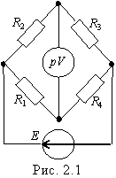

ТЕОРЕТИЧЕСКИЕ СВЕДЕНИЯ И РАСЧЁТНЫЕ ФОРМУЛЫ
Мосты постоянного тока широко применяют для измерения электрических и неэлектрических величин. Условие равновесия четырехплечного моста с питанием от источника постоянного напряжения с ЭДС E (рис 2.1)

R1 · R3 = R2 · R4,U ≈ E(R4R2 /[(R1 + R4)(R2 + R3)] ≈ EΔR4 /4R4,
при условии, что R1 = R2 = R3 = R4.
Важной характеристикой моста является его чувствительность (в данном случае) по напряжению вблизи равновесия:
- абсолютная Sа = ΔU/ΔR при приращении ΔR4 = ΔR;
- относительная So = ΔU/(ΔR/R4),
где ΔU = Un+1 - Un - есть приращение выходного напряжения в диагонали моста, вызванное изменением сопротивления плеча моста на ΔR.
Примечание. При приращениях в двух плечах моста приращение ΔR в формулах Sa и Sо нужно удвоить.